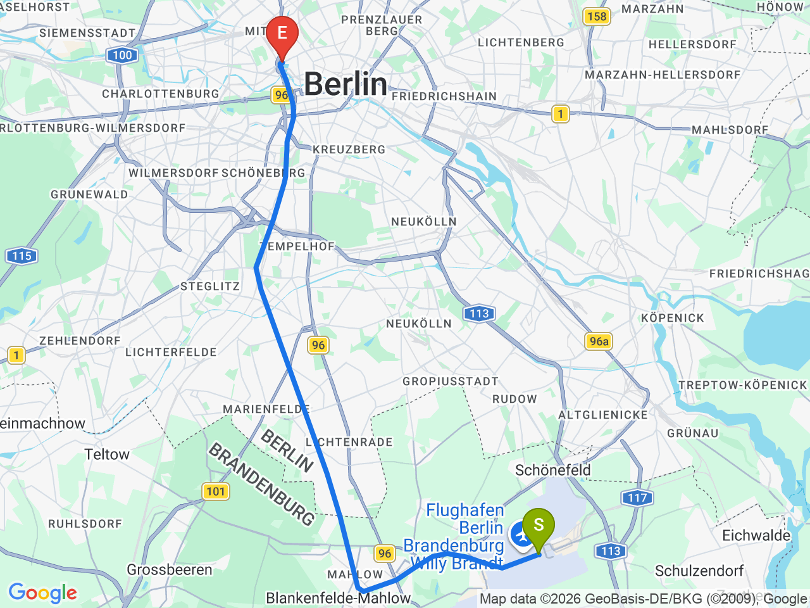
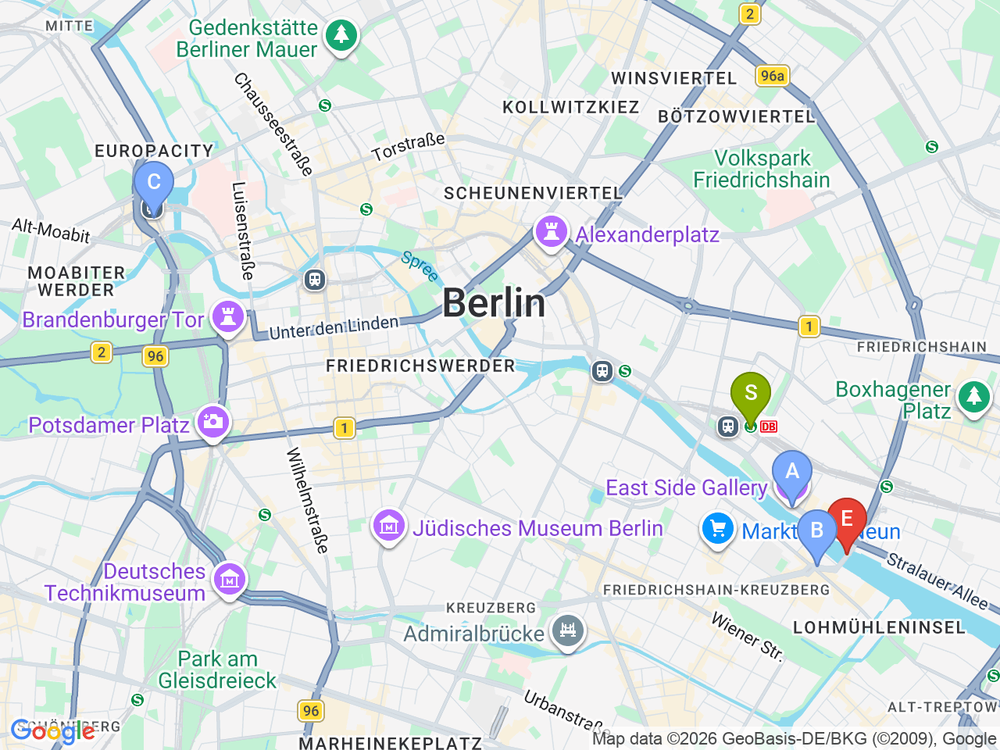

Day 17 · 2026-09-01（二）
德國・柏林/萊比錫/德勒斯登 Day 1/7
抵達柏林：東邊畫廊與 Oberbaumbrücke
BER 機場快線直達中央車站，午後沿施普雷河走訪東邊畫廊壁畫
⏰交通票務：抵達當天(9/1)在機場買 BVG ABC 區 24小時票（BER位於C區）；之後9/2～9/5只在市區活動，改買 AB 區票即可，比較划算。機場→飯店：搭 FEX 機場快線至 Hbf 約30分鐘直達，不用轉車；接下來幾天從 Hbf 出發，市區移動可搭 U5 直達博物館島（Museumsinsel站）、紅色市政廳（尼古拉街區）一帶
機場→飯店（FEX 機場快線）

市區景點地圖

固定時間行程DAY 17
| 時間 | 地點 | 地點 (英文) | 交通方式／班次 | 價格 | 預計停留(分鐘) | 備註 |
|---|---|---|---|---|---|---|
| 13:10 | 抵達 BER 機場 | 依實際航班時間調整 | ||||
| 13:30 | 搭 FEX 機場快線前往 Hbf | FEX 約30分鐘 | ||||
| 14:00 | 抵達 Hbf，飯店放行李 | 1ibis Berlin Hauptbahnhof, Berlin | 步行 | 20 | Check-in 15:00，行李可先寄放櫃檯 |
彈性探索景點DAY 17
| 地點 | 地點 (英文) | 預計停留(分鐘) | 價格 | 備註 |
|---|---|---|---|---|
| 搭車至 Ostbahnhof | ABerlin Ostbahnhof | 約15分鐘 | Hbf 搭 S3/S5/S7 三站即達 | |
| 東邊畫廊 | BEast Side Gallery, Berlin | 約60分鐘 | 免費 | 現存最長一段柏林圍牆，露天壁畫展 |
| Oberbaumbrücke | COberbaumbrücke, Berlin | 約20分鐘 | 免費 | 沿河走約1.3km即達，柏林最美的橋之一 |
| 晚餐：Burgermeister Schlesisches Tor | DBurgermeister Schlesisches Tor, Berlin | 約45分鐘 | 見上方三餐資訊 | 過橋即到，高架橋下漢堡名店 |
| 晚餐備案：Vapiano Hauptbahnhof | FVapiano, Washingtonplatz 2, Berlin | 約45分鐘 | 就在飯店旁，Burgermeister 人多或想吃別的可改這裡 |
每日三餐
晚餐
Burgermeister Schlesisches TorBurgermeister Schlesisches Tor約 €6-10／人
📍 Burgermeister Schlesisches Tor, Berlin高架橋下漢堡名店，過 Oberbaumbrücke 橋即到；備案：Vapiano Hauptbahnhof（Washingtonplatz 2，飯店旁）
住宿資訊
ibis Berlin Hauptbahnhof
📍 ibis Berlin Hauptbahnhof, BerlinCheck-in15:00
地址 Invalidenstraße 53，中央車站旁，9/1～9/5 連住4晚